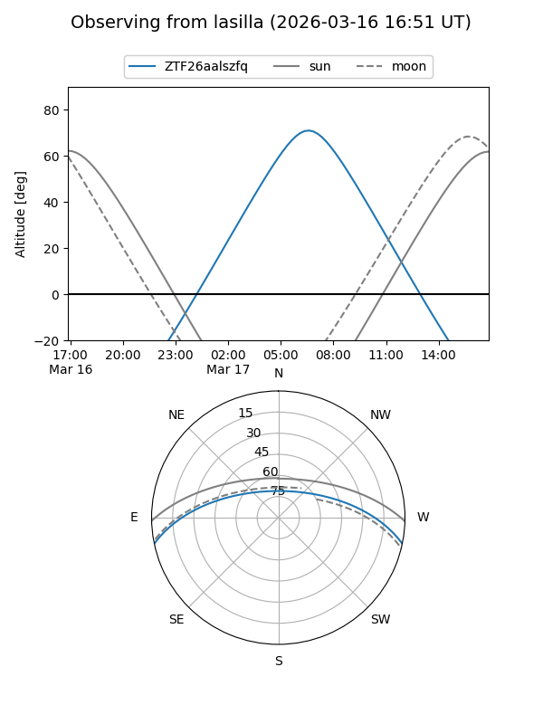
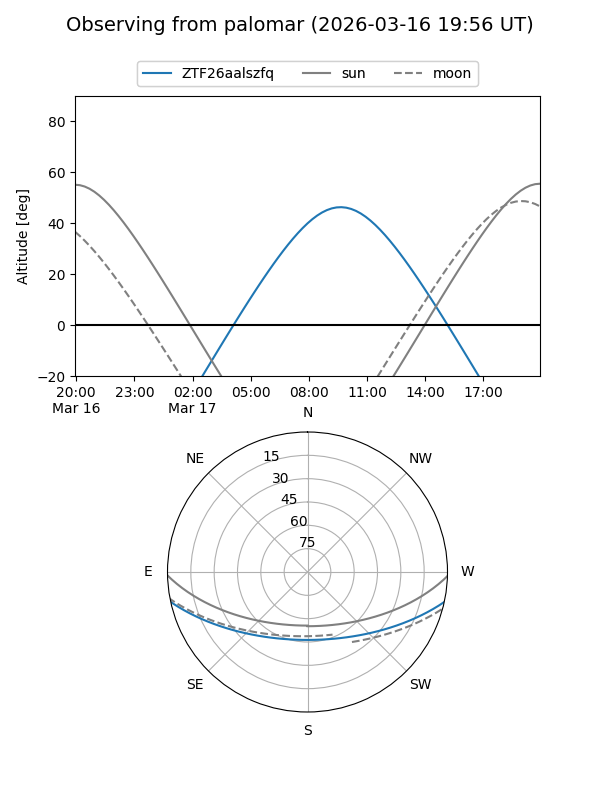

ZTF26aalszfq
Target ZTF26aalszfq at 2026-03-17 11:55
Aliases and brokers:
FINK: link
Lasair: link
ALeRCE: link
alt names
ZTF26aalszfq (ztf,fink_ztf)
Coordinates:
equatorial (ra, dec) = 202.3953,-10.17631
equatorial (HMS+DMS) = 13:29:34.87,-10:10:34.70
galactic (l, b) = (318.1393,+51.56566)
Flags:
Photometry:
last ztfg=19.36
1 ztfg detections
Lightcurve
Visibility


Additional plots